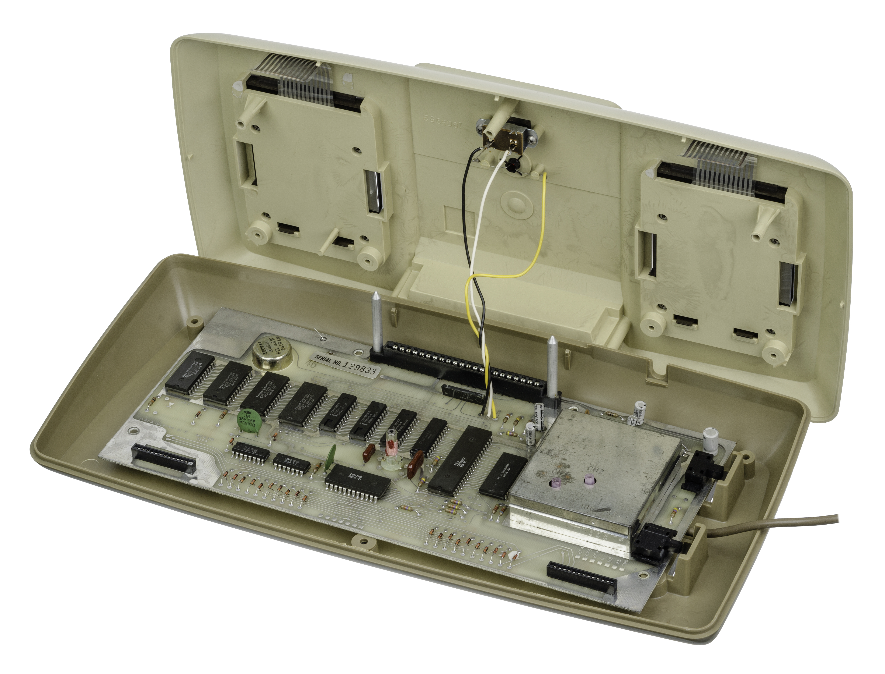
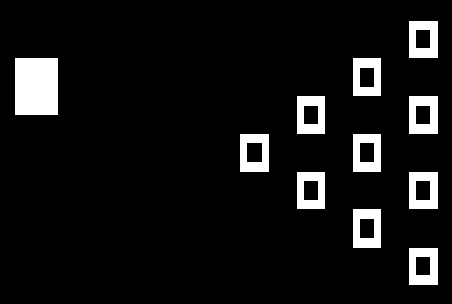
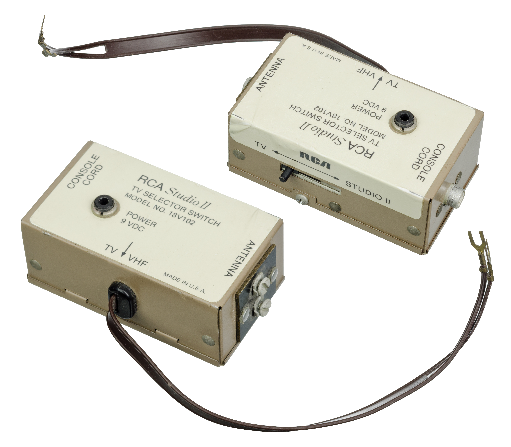

RCA Studio II
The home console with no joystick — every game played on telephone-style numeric keypads

Overview
Released January 1977 at US$149.95, the RCA Studio II was RCA's cartridge game console built around the company's own RCA 1802 "COSMAC" microprocessor, with graphics from the CDP1861 "Pixie" video chip driving a strictly black-and-white 64×32 display. It shipped with five built-in games (Addition, Bowling, Doodle, Freeway, Patterns) stored in 2KB of ROM, with eleven cartridges sold across four themed series (TV Arcade, TV Casino, TV Mystic, TV Schoolhouse). Its defining and strangest feature was its input: all gameplay happened through two wired ten-button numeric keypads built into the console body, with arrows molded into the bezel for directional play and a separate clear reset button wired to the CPU's clear line. There was no joystick, and a player could push two adjacent keys together to register a diagonal — one of only two consoles of the era to claim 16-directional control.
RCA had famously passed on Ralph Baer's original Odyssey in 1971, and the Studio II was its attempt to re-enter home games. It arrived months after the Fairchild Channel F and a year before the Atari 2600, with no color, no detachable controllers, and cartridges that loaded "backwards" — rods on the console plugged into holes in the cartridge. An internal RCA sales document records roughly 53,000 to 64,000 units sold between February 1977 and January 1978. After the poor Christmas 1977 season, RCA shut the line down, laid off 120 workers at the Swannanoa, North Carolina plant, and sold remaining inventory to Radio Shack, which unloaded Studio II bundles for $59.95. RCA never released another console; a color-capable Studio III was completed but only appeared in licensed clones such as the Toshiba Visicom COM-100 and the Hanimex MPT-02.
The interaction model is the museum's point of interest: a home console that bet home computing would be a button-pushing activity, not a movement one. The Studio II is a complete, coherent alternative vision of game input — telephone-keypad grammar, discrete button presses, results read off a monochrome screen — that lost decisively to the analog joystick.
Deep dive
The Studio II's keypads encoded a specific assumption about what home computing would feel like: a sequence of discrete button presses, like a telephone or a cash register, not continuous analog movement. Games were designed around that grammar — enter numbers, press keys, read results on the monochrome screen. RCA even argued the keypad was a feature: the 16-direction claim (two adjacent keys at once) was used to claim the console could out-maneuver joystick rivals. The assumption lost. Atari's 2600 joystick, released ten months later, made analog thumb movement the industry's default input for forty years.
The Studio II was obsolete at launch: monochrome in a color era, non-detachable controllers, and a year behind the joystick paradigm. After the poor Christmas 1977 season, RCA exited home games entirely, laid off 120 workers in North Carolina, and fire-sold the remaining inventory through Radio Shack at $59.95. A color-capable Studio III was finished but only shipped as licensed clones (Toshiba Visicom COM-100, Hanimex MPT-02, Academy Apollo 80).
The Studio II's CPU, the RCA 1802, was a radiation-tolerant CMOS design that found its true market far from the living room: six 1802s flew on NASA's Galileo Jupiter orbiter, and the chip also served aboard Magellan, Hubble's wide-field camera, Ulysses, and AMSAT satellites. The same microprocessor that made a failed console's Bowling game run helped a spacecraft reach the Galilean moons. (A common internet claim that Voyager used the 1802 is explicitly flagged as erroneous on the Voyager program's Wikipedia article.)
The Studio II has one more first: its cartridge library was partly written by Joyce Weisbecker, daughter of RCA engineer Joseph Weisbecker, who designed the console and the 1802. She wrote School House I (a math quiz) and Speedway/Tag for the Studio II in 1976–77, making her the first woman to develop commercial video games. The Hagley Museum & Library has recorded an oral history of the console's development from her perspective.
Team & pioneers
- RCA (Radio Corporation of America) Design and distribution via the RCA Distributor & Special Products Division, Deptford, NJ; built at the Swannanoa, NC plant
- Joseph Weisbecker RCA engineer; designer of the RCA 1802 COSMAC microprocessor and the Studio II architecture
- Joyce Weisbecker Wrote School House I and Speedway/Tag — the first commercial video games by a woman
Media



Sources
- Wikipedia — RCA Studio II
- Wikipedia — RCA 1802
- The Dot Eaters — Studio II: Two Little, Too Late
- iFixit — RCA Studio II Teardown
- Hagley Museum & Library — An Oral History of the RCA Studio II
- Digital Press — RCA Studio II FAQ by Jack Spencer Jr.
- Internet Archive — Studio II Owner's Manual
- IT History Society — RCA Studio II